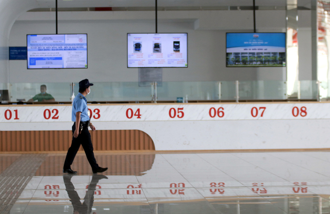
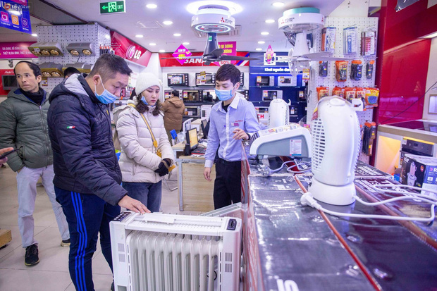

-
Phó thủ tướng: "thời cơ sẽ về tay nếu phát triển nhanh 5G"
TP HCM các hãng xe chưa đón trả khách cố định ở bến xe Miền đông mới như kế hoạch khiến bến xe lớn nhất nước sau 3 tháng hoạt động vẫn vắng khách. -

Bến xe miền đông vắng khách
Nếu triển khai 5G nhanh như từng làm với 2G, Phó thủ tướng Vũ Đức Đam tin Việt Nam đón được thời cơ bởi: "5G sẽ thay đổi toàn bộ." -

Băng tuyết tan, quốc lộ 4D thông xe
Trời hừng nắng nên băng tuyết dần tan trên đèo Ô Quy Hồ đoạn nối hai tỉnh Lào Cai và Lai Châu giao thông qua khu vực này trở lại bình thường.